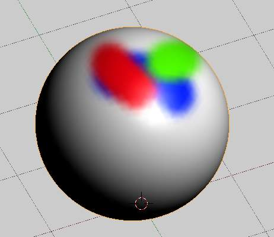
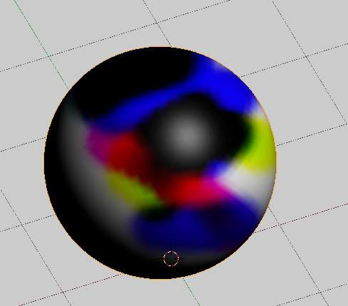

Options¶
Tools¶
The Tools Shelf, shortcut T contains most of the options for vertex painting.
The following sections describe the controls in each of the available panels.
Vertex 绘制 Options.
Brush¶
- Brush Data-Block
- The image, name panel and color selector at the top allows you to select brush presets, rename brushes, as well as add custom brushes, and delete them.
- Radius
- Set the radius of the brush
- Strength
- Set the strength of the brush’s effect.
- Blend
- Mix
Mixes RGB values. When set to a strength of 1.0, it will cover the underlying “paint”.
Mix overlay with full strength.
- Add
- Adds RGB values. Will eventually turn the entire object white as RGB values accumulate to 1.0-1.0-1.0: Pure White.
- Subtract
Subtracts RGB values. Usually results in Black.
Subtract with full strength.
- Multiply
- Multiplies brush colors by the vertex colors.
- Blur
- Blurs vertex colors.
- Lighten
- Lightens the color of the vertices.
- Darken
- Darkens the color of the vertices.
纹理¶
Use the texture selector at the bottom of the paint panel to select a pre-loaded image or procedural texture to use as your brush pattern. Note that in order to use it, you must have a placeholder material defined, and that particular texture defined using the Material and 纹理 buttons. It is not necessary to have that material or texture applied to any mesh anywhere; it must only be defined.
- Brush Mapping Mode
Sets how the texture is applied to the brush
- View Plane
- In 2D painting, the texture moves with the brush
- Tiled
- The texture is offset by the brush location
- 3D
- Same as tiled mode
- Stencil
- 纹理 is applied only in borders of the stencil.
- Random
- Random applying of texture.
- Angle
This is the rotation angle of the texture brush. It can be changed interactively via
Ctrl-Fin the 3D视图. While in the interactive rotation you can enter a value numerically as well. Can be set to:- User
- Directly input the angle value.
- Rake
- Angle follows the direction of the brush stroke. Not available with 3D textures.
- Random
- Angle is randomized.
- Offset
- Offset the texture in x, y, and z.
- Size
- Set the scale of the texture in each axis.
Stroke¶
- Stroke Method
Allows set the way applying strokes.
- Airbrush
Flow of the brush continues as long as the mouse click is held, determined by the Rate setting. If disabled, the brush only modifies the color when the brush changes its location.
- Rate
- Interval between paints for airbrush
- Space
Creates brush stroke as a series of dots, whose spacing is determined by the Spacing setting.
- Spacing
- Represents the percentage of the brush diameter. Limit brush application to the distance specified by spacing.
- Dots
- Apply paint on each mouse move step
- Jitter
- Jitter the position of the brush while painting
- Smooth stroke
Brush lags behind mouse and follows a smoother path. When enabled, the following become active:
- Radius
- Sets the minimun distance from the last point before stroke continues.
- Factor
- Sets the amount of smoothing.
- 输入 Samples
- Average multiple input samples together to smooth the brush stroke.
{kind=link}
Options¶
Options for vertex painting.
Overlay¶
Allows you to customize the display of curve and texture that applied to the brush.
Appearance¶
Allows you to customize the color of the brush radius outline, as well as specify a custom icon.
Options¶
- Normals
- Applies the Vertex Normal before painting. This does not usually affect painting.
- Spray
- Continues painting for as long as the mouse is held.
- Unified 设置
- Size
- All brushes use the same size.
- Strength
- All brushes use the same strength.